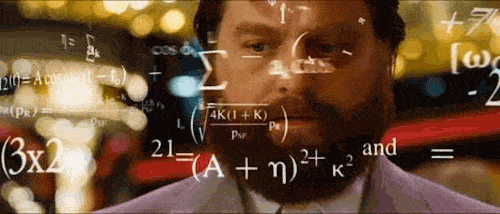
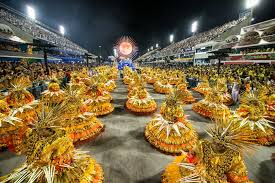
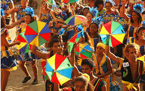
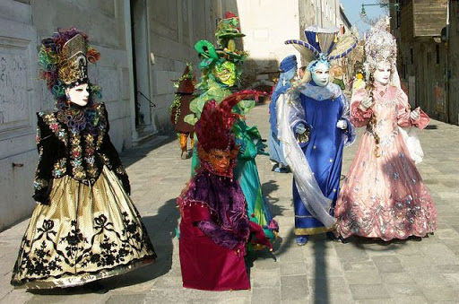
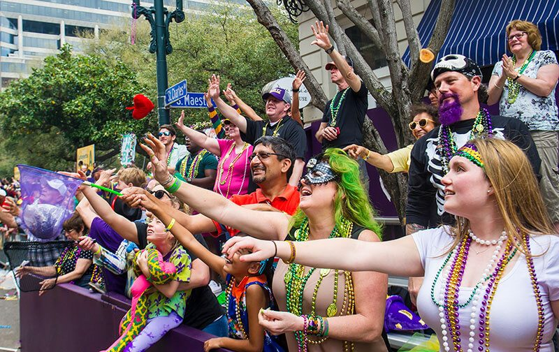
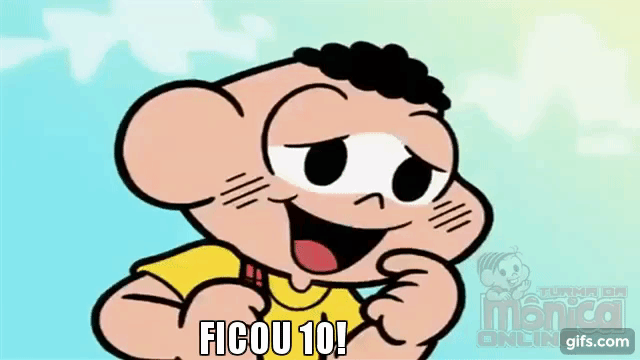

<!DOCTYPE html>
<html lang="pt" dir="ltr">
  <head>
    <meta charset="utf-8">
    <link rel="stylesheet" href="FUND I.css">
    <title>VIA E do sexto ao 9 ano</tit
  <body>
    <header>
      <h1 align= "center">VIA E do 6º ao 9º ano.</h1>
    </header>

    <main class="box">

    <div class= "viaee">
      <h2 class="tituloviaee">Via-e do 6º ao 9º ano.</h2>
      <p align="justify">Este ano dentro da disciplina do Via-e, trabalharemos a educação digital através de um projeto interdisciplinar, ou seja, primariamente vocês aprenderão como construir uma página de internet, através da linguagem de programação html, e complementarão esse projeto com as matérias regulares.</p>

   </div>

   <div class="logotipoviae">
     
   </div>


   <div class="webdev">
     <h2 class="tituloweb">WEB DEV – Web Developer:</h2>
     <p align="justify">Web Dev ou Web Developer significa desenvolvedor de sistemas, é um termo usado para descrever o desenvolvimento de websites da internet. Toda a linguagem de programação será aprendida no decorrer desse ano letivo dentro da disciplina do Via-e que englobará a educação digital (digital house).</p>
     <p align="justify">Todo site tem que ter um conteúdo, sendo assim cada ano de ensino terá o seu conteúdo, que cada aluno colocará em seu site. Os conteúdos serão interdisciplinares com as outras matérias regulares, portanto, a nota pedagógica da disciplina Via-e/Educação digital será a mesma das outras matérias, nesse caso com o tema central do Carnaval, os alunos de cada ano farão uma pesquisa e algo material a ser confeccionado na aula de artes.</p>
   </div>

  <div class="6ano">
    <h3 class="sexto">6º ano do Ensino Fundamental:</h3>
    <p align="justify">Os 6º anos ficaram com a pesquisa sobre como é o carnaval no sudeste do Brasil, a pesquisa escrita tem que respeitar todos os critérios passados pelo professor responsável. Juntamente ainda fazendo parte da nota serão confeccionadas Máscaras a fazerem parte da decoração.</p>
    <p align="justify">Esta mesma pesquisa, deverá ser colocada na sua página de internet que você estará aprendendo a fazer.</p>
    
 </div>

      <div class="7ano">
        <h3 class="setimo">7º ano do Ensino Fundamental:</h3>
        <p align="justify"> Os 7º anos ficaram com a pesquisa sobre como é o carnaval no nordeste do Brasil, a pesquisa escrita tem que respeitar todos os critérios passados pelo professor responsável. Juntamente ainda fazendo parte da nota serão confeccionadas guarda-chuva de Frevo, a fazerem parte da decoração.</p>
        <p align="justify">Esta mesma pesquisa, deverá ser colocada na sua página de internet que você estará aprendendo a fazer.</p>
        
      </div>

      <div class="8ano">
        <h3 class="oitavo">8º ano do Ensino Fundamental:</h3>
        <p align="justify">Os 8º anos ficaram com a pesquisa sobre a origem do carnaval , a pesquisa escrita tem que respeitar todos os critérios passados pelo professor responsável. Juntamente ainda fazendo parte da nota serão confeccionadas Bonecos de Olinda, a fazerem parte da decoração.</p>
        <p align="justify">Esta mesma pesquisa, deverá ser colocada na sua página de internet que você estará aprendendo a fazer.</p>
        
      </div>

      <div class="9ano">
        <h3 class="nono">9º ano do Ensino Fundamental:</h3>
        <p align="justify">Os 9º anos ficaram com a pesquisa sobre como é o carnaval em outras partes do mundo, a pesquisa escrita tem que respeitar todos os critérios passados pelo professor responsável. Juntamente ainda fazendo parte da nota essa turma ficará responsável pela organização das músicas a serem tocadas no dia da festa e de fazerem parte da decoração do ambiente que será a quadra.</p>
        <p align="justify">Esta mesma pesquisa, deverá ser colocada na sua página de internet que você estará aprendendo a fazer.</p>
        
      </div>

      <div class="avaliaçãofund">
        <h2 class="avafund">SISTEMA DE AVALIAÇÃO:</h2>
        <p align="justify">todo este trabalho de pesquisa e confecção será interdisciplinar e contará para a nota pedagógica bimestral de todas as matérias, sendo a pesquisa com peso 2,5 pontos e a parte manual artística com peso 2,5 pontos.</p>
        <p align="justify">todo este trabalho de pesquisa e confecção será interdisciplinar e contará para a nota pedagógica bimestral de todas as matérias, sendo a pesquisa com peso 2,5 pontos e a parte manual artística com peso 2,5 pontos.</p>
        
      </div>

    </main>
    <footer align= "center">“O que nos move é estimular a vontade de aprender e despertar o melhor de cada aluno”.
  Marco Gregori – Idealizador
  </footer>
  </body>

</html>
